14 Проверка статистических гипотез
14.1 О статистике
Статистика позволяет оценить какие-то стохастические процессы, которые происходят в мире. Центральное понятие статистики — генеральная совокупность, множество всех элементов какой-либо группы, параметр которой мы хотим оценить:
- все жители РФ при оценке роста;
- все возможные тексты писателя (реальные и потенциальные) при оценке частоты встречаемости каких-либо элементов;
- все возможные курсы валют при попытке оценить курс валюты завтра;
- все страны при попытке оценить количество уникальных имен в странах мира
- и т. д.
Весь статистический анализ строится на основе предположений о свойствах генеральной совокупности и некоторой выборки из генеральной совкупности. Так если мы не можем взять всю генеральную совокупность и оценить ее параметр θ (средний рост, доля встречаемости гласных в текстах писателя и т. д.), то мы берем случайную выборку из генеральной совокупности и оцениваем параметр выборки θ̂ и делаем предположения о том, как параметр может быть устроен в генеральной совокупности. Если выборка, которой мы располагаем содержит в себе генеральную совокупность, то нужда оценить некоторый параметр казалось бы отпадает (в таком случае задача переходит в область теории вероятностей):
- Какая доля слов “не” в корпусе текстов Пушкина?
Однако бывают задачи, которые даже обладая генеральной совокупностью, можно переформулировать в статистические:
- Какая доля слов “не” будет в свежеобнаруженном тексте Пушкина длины \(n\)?
- Исследователь каждый год ездит на остров Суматра и обнаруживает каждый год несколько неизвестных науке видов ящериц. С каждый годом он обнаруживает неизвестные науке виды ящериц все реже и реже. Можем ли мы оценить сколько ящериц неизвестного вида исследователь найдет в этом году?
Существует несколько школ статистического анализа: фриквентистская и байесовская. Мы будем работать в рамках фриквентистской.
14.2 Проверка нулевой гипотезы
Теперь мы обсудим стандартный трюк, который получил большую популярность в XX веке, и сейчас повсеместно продолжает использоваться. Этот трюк, к сожалению, помогает лишь показать, что что-то отличается, так что мы немножко переиначим наши задачи.
Представим себе, что я исследую героев Звездных войн. Я верю, что герои с именем на “B” встречаются в Звездных войнах с вероятностью 0.103. В новом фильме из 13 новых персонажей 4 имеют имя на “B,” т. е. мы наблюдаем долю 0.31. Является ли разница межда наблюдениями 0.31 и ожиданиями 0.103 статистически значимой?
Создадим две гипотезы:
- \(H_0\) — (нулевая гипотеза) разница не является статистически значимой, т. е. наблюдаемые данные могут происходят из ожидаемого распределения.
- \(H_1\) — (альтернативная гипотеза) разница является статистически значимой, т. е. наблюдаемые данные не могут происходят из ожидаемого распределения.
Нулевая гипотеза — это гипотеза, которую каждый исследователь хочет отвергнуть, и принять альтернативную. После применения статистического критерия (каждый критерий зависит от конкретного статистического теста, а выбор теста зависит от типа данных) исследователь считает вероятность наблюдать такой или более экстремальный результат, если верна нулевая гипотеза (p-value, p-уровень значимости):
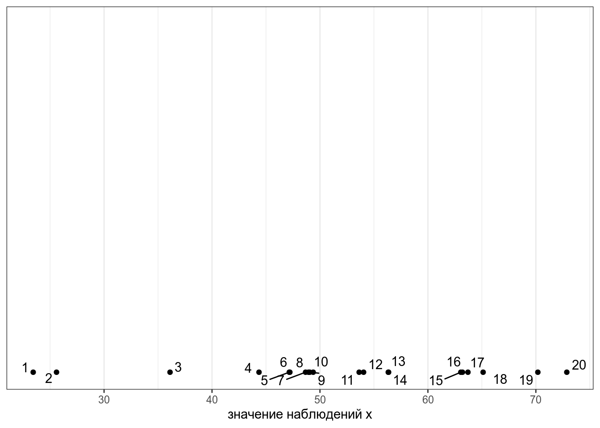
sum(dbinom(4:13, size = 13, prob = 0.103))[1] 0.03758494Это же можно сделать при помощи следующей функции:
binom.test(x = 4, n = 13, p = 0.103, alternative = "greater")
Exact binomial test
data: 4 and 13
number of successes = 4, number of trials = 13, p-value = 0.03758
alternative hypothesis: true probability of success is greater than 0.103
95 percent confidence interval:
0.1126658 1.0000000
sample estimates:
probability of success
0.3076923 Дальше в разных науках принимают некоторое критическое значение (в большинстве случаев это 0.05), и если p-value меньше данного заветного значения, считается, что тогда разница является статистически значимой.

If all else fails, use “significant at a p>0.05 level” and hope no one notices (https://xkcd.com/1478/)
14.3 Классификация статистических тестов
14.3.1 Количество выборок
- Одновыборочные тесты (one-sample tests)
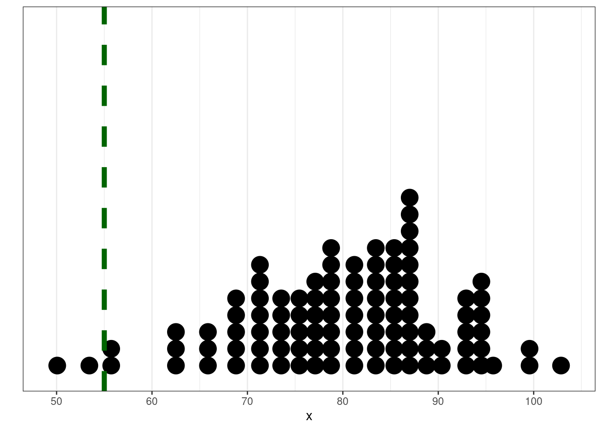
- Двухвыборочные тесты (two-sample tests)

- многовыборочные тесты (multiple-sample tests)

14.3.2 Направление
односторонние 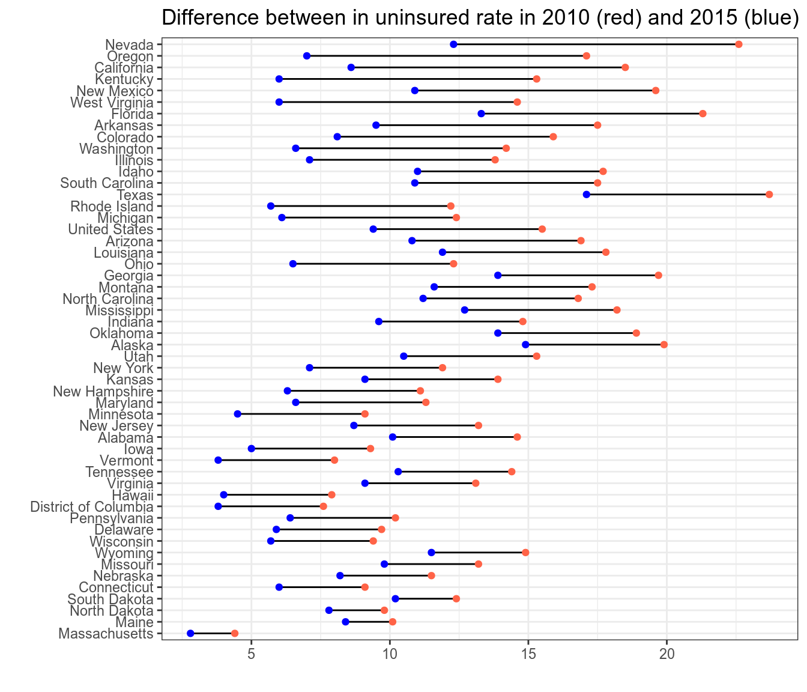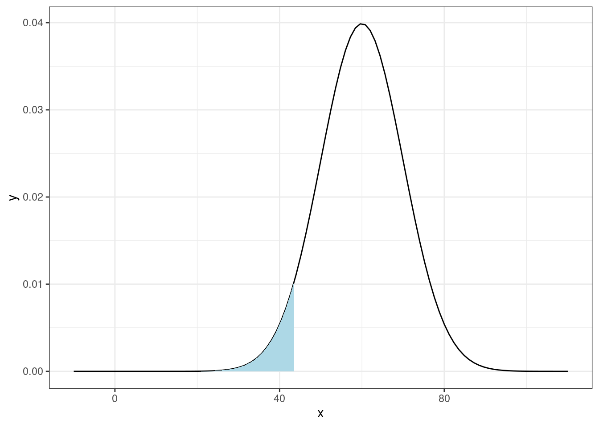
двусторонние

14.3.3 Парные vs. непарные
- непарные — если наблюдения в одной группе независимы друг от друга (мужчины vs. женщины, пожилые vs. молодые? и т. д.)
- парные — если наблюдения имеют соответствия между собой (настроение до пары R и после, измерение температуры обычным и инфракрасным термометром, и т. п.)
14.3.4 Параметрические vs. непараметрические
Некоторые тесты работают с предположениями об устройстве данных. В нашем случае данные предположения: нормальность распределения.
14.3.5 Классификация тестов
| распределение | тип группы | # групп | тест |
|---|---|---|---|
| категориальные | с заданным значением | 1 | биномиальный тест, χ² |
| категориальные | независимые | 2 | χ², тест Фишера, G-test (LL-score) |
| категориальные | зависимые | 2 | критерий Мак-Нимара |
| нормальное | с заданным значением | 1 | одновыборочный t-test |
| нормальное | независимые | 2 | t-test для независимых выборок |
| нормальное | зависимые | 2 | парный t-test |
| не нормальное | с заданным значением | 1 | критерий Уилкоксона |
| не нормальное | независимые | 2 | критерий Манна-Уитни |
| не нормальное | зависимые | 2 | критерий Уилкоксона |
14.4 Одновыборочные тесты
14.4.1 Биномиальный тест
Мы уже обсудили биномиальный тест выше. В частотном словаре [Ляшевская Шаров 2009], созданном на базе корпуса объемом 92 млн. словоупотреблений, существительное кенгуру имеет абсолютную частотность 0.0000021, а предлог к — 0.005389 (его вариант ко в расчет не берется). В некотором тексте длиной 61981 слов существительное кенгуру встречается 58 раз, а предлог к — 254. Можем ли мы считать, что это обычный ничем не примечательный результат?
# кенгуру
binom.test(x = 58, n = 61981, p = 0.0000021)
Exact binomial test
data: 58 and 61981
number of successes = 58, number of trials = 61981, p-value < 2.2e-16
alternative hypothesis: true probability of success is not equal to 2.1e-06
95 percent confidence interval:
0.0007106442 0.0012095348
sample estimates:
probability of success
0.0009357706 # к
binom.test(x = 254, n = 61981, p = 0.005389)
Exact binomial test
data: 254 and 61981
number of successes = 254, number of trials = 61981, p-value =
5.862e-06
alternative hypothesis: true probability of success is not equal to 0.005389
95 percent confidence interval:
0.003610363 0.004632987
sample estimates:
probability of success
0.00409803 Мы посчитали количество букв а в рассказе А. П. Чехова и получили 58 букв из рассказа длинной 699 букв (пробелы и латинские буквы выкинуты). Является ли этот результат неожиданным, если мы ожидали долю 0.08. Приведите значение p-value с точностью до 2 знаком после запятой.
14.4.2 Одновыборочный t-тест
Из статьи С. Степановой 2011 мы знаем, что носители русского языка в среднем говорят 5.31 слога в секунду со стандартным отклонением 1,93 (мужчины 5.46 слога в секунду со средним отклонением 2.02, женщины 5.23 слога в секунду со средним отклонением 1.84, дети 3.86 слога в секунду со средним отклонением 1.67). Мы опросили 30 носителей деревни N и выяснили, что средняя равна 7, а стандартное отклонение равно 2. Является ли данная разницастатистически значимой?
set.seed(42)
data <- rnorm(n = 30, mean = 7, sd = 2)
tibble(data) %>%
ggplot(aes(data))+
geom_dotplot()+
geom_vline(xintercept = mean(data), size = 2, linetype = 2)+
geom_vline(xintercept = 5.31, size = 2, linetype = 2, color = "red")+
annotate(geom = "text", x = 3, color = "red", y = 0.75, label = "среднее согласно\n[Степанова 2011]", size = 5)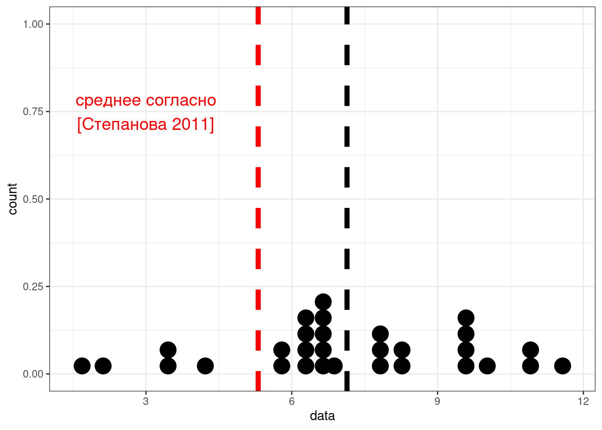
t.test(data, mu = 5.31)
One Sample t-test
data: data
t = 3.9871, df = 29, p-value = 0.0004143
alternative hypothesis: true mean is not equal to 5.31
95 percent confidence interval:
6.199903 8.074444
sample estimates:
mean of x
7.137174
Создайте 30 нормально распределенных наблюдений со средним 6 и стандартным отклонением 2, используя set.seed(42) и сравните полученные данные с результатами Степановой. Является ли разница статистически значимой? Приведите значение p-value с точностью до 2 знаком после запятой.
t-тест имеет несколько предположений относительно структуры данных:
- нормальность распределения данных
- гомоскедостичность (гомогенность) дисперсии
14.4.3 Тест Уилкоксона
Если данные не нормально распределено, обычно используют критерий Уилкоксона
set.seed(42)
data <- rlnorm(n = 30, mean = 1.8, sd = 0.1)
tibble(data) %>%
ggplot(aes(data))+
geom_dotplot()+
geom_vline(xintercept = mean(data), size = 2, linetype = 2)+
geom_vline(xintercept = 5.31, size = 2, linetype = 2, color = "red")+
annotate(geom = "text", x = 4.9, color = "red", y = 0.75, label = "среднее согласно\n[Степанова 2011]", size = 5)
wilcox.test(data, mu = 5.31)
Wilcoxon signed rank exact test
data: data
V = 436, p-value = 3.239e-06
alternative hypothesis: true location is not equal to 5.3114.5 Двухвыборочные тесты
14.5.1 Двухвыборочный t-тест
Логика двухвыборочного теста такая же как одновыборочного:
set.seed(42)
sample_1 <- rnorm(25, mean = 40, sd = 5)
sample_2 <- rnorm(25, mean = 50, sd = 4.5)
tibble(sample_1, sample_2) %>%
pivot_longer(names_to = "dataset", values_to = "values", sample_1:sample_2) %>%
group_by(dataset) %>%
mutate(mean = mean(values)) %>%
ggplot(aes(values, fill = dataset))+
geom_dotplot(show.legend = FALSE)+
geom_vline(aes(xintercept = mean, color = dataset), size = 2, linetype = 2, show.legend = FALSE)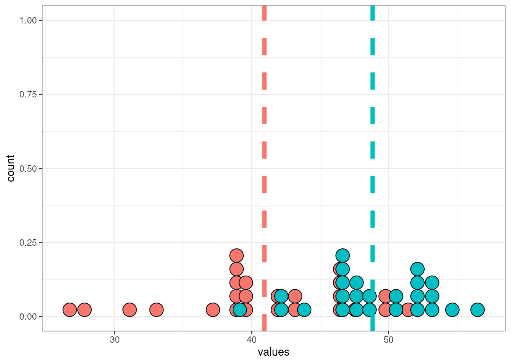
t.test(sample_1, sample_2)
Welch Two Sample t-test
data: sample_1 and sample_2
t = -5.0632, df = 41.295, p-value = 9.005e-06
alternative hypothesis: true difference in means is not equal to 0
95 percent confidence interval:
-11.046695 -4.748026
sample estimates:
mean of x mean of y
40.93768 48.83504 В работе (Coretta 2017, https://goo.gl/NrfgJm) рассматривается отношения между длительностью гласного и придыхание согласного. Автор собрал данные 5 носителей исландского. Дальше он извлек длительность гласного, после которого были придыхательные и непридыхательные. Скачайте данные и Проверьте, правда ли, что гласные перед аспирированныем согласными статистикали значимо короче гласных после которых непридыхательные для носителя. В ответе приведите t-статистику c точностью до трех знаков после запятой.
14.5.2 Двухвыборочный парный t-тест
set.seed(42)
sample_1 <- rnorm(25, mean = 40, sd = 5)
sample_2 <- sample_1 - rnorm(25, mean = 5)
tibble(sample_1, sample_2) %>%
pivot_longer(names_to = "dataset", values_to = "values", sample_1:sample_2) %>%
group_by(dataset) %>%
mutate(mean = mean(values)) %>%
ggplot(aes(values, fill = dataset))+
geom_dotplot(show.legend = FALSE)+
geom_vline(aes(xintercept = mean, color = dataset), size = 2, linetype = 2, show.legend = FALSE)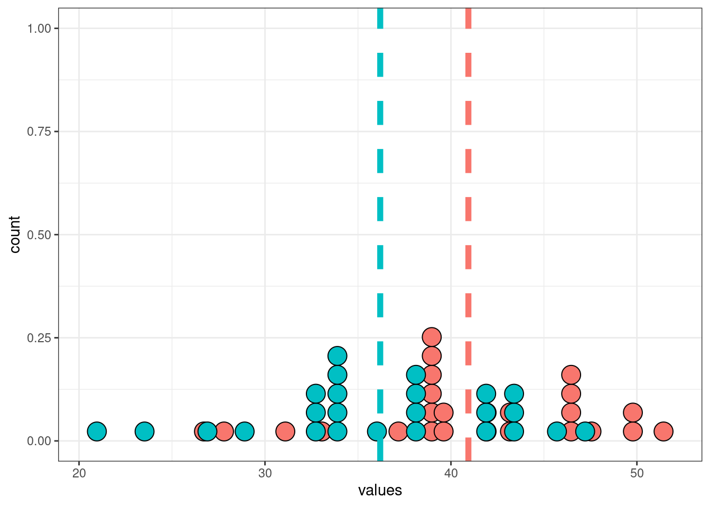
t.test(sample_1, sample_2, paired = TRUE)
Paired t-test
data: sample_1 and sample_2
t = 25.034, df = 24, p-value < 2.2e-16
alternative hypothesis: true difference in means is not equal to 0
95 percent confidence interval:
4.350251 5.131990
sample estimates:
mean of the differences
4.74112 14.5.3 Критерий Манна-Уитни
Если данные не распределены нормально, тогда используется критерий Манна-Уитни (по английски его тоже называют Wilcoxon test).
set.seed(42)
data_1 <- rlnorm(n = 30, mean = 1.8, sd = 0.1)
data_2 <- rlnorm(n = 30, mean = 1.6, sd = 0.1)
tibble(data_1, data_2) %>%
pivot_longer(names_to = "dataset", values_to = "values", data_1:data_2) %>%
group_by(dataset) %>%
mutate(mean = mean(values)) %>%
ggplot(aes(values, fill = dataset))+
geom_dotplot(show.legend = FALSE)+
geom_vline(aes(xintercept = mean, color = dataset), size = 2, linetype = 2, show.legend = FALSE)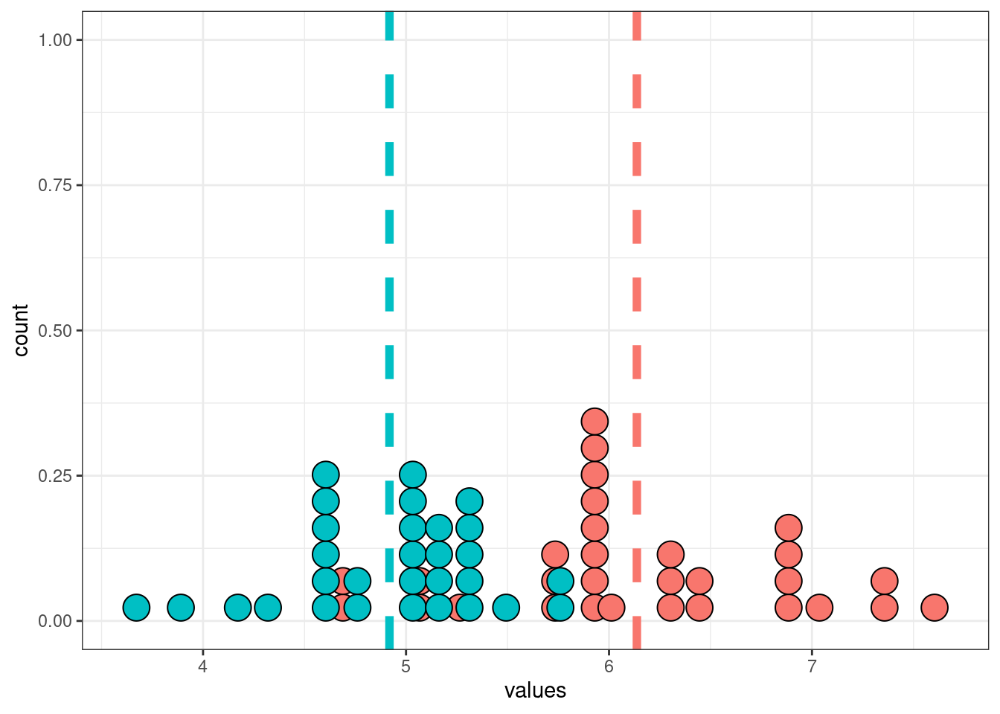
wilcox.test(data_1, data_2)
Wilcoxon rank sum exact test
data: data_1 and data_2
W = 818, p-value = 2.419e-09
alternative hypothesis: true location shift is not equal to 014.5.4 Критерий χ², тест Фишера
Если мы хотим сравнить распределение категориальных переменных, то обычно строят таблицы сопряженности и используют критерий χ².
Например, из интервью с носителями одной деревни произвольным образом выбрали по пол часа и посчитали кол-во реализаций диалектных форм vs. недиалектных. В результате получилось что у женщин было 107 диалектных форм vs. 93 недиалектные, а у мужчин — 74 vs. 45. Значима ли зафиксированная разница?
dialect_forms <- read_csv("https://raw.githubusercontent.com/agricolamz/DS_for_DH/master/data/dialect_forms_fake.csv")
dialect_forms %>%
ggplot(aes(gender, fill = form))+
geom_bar()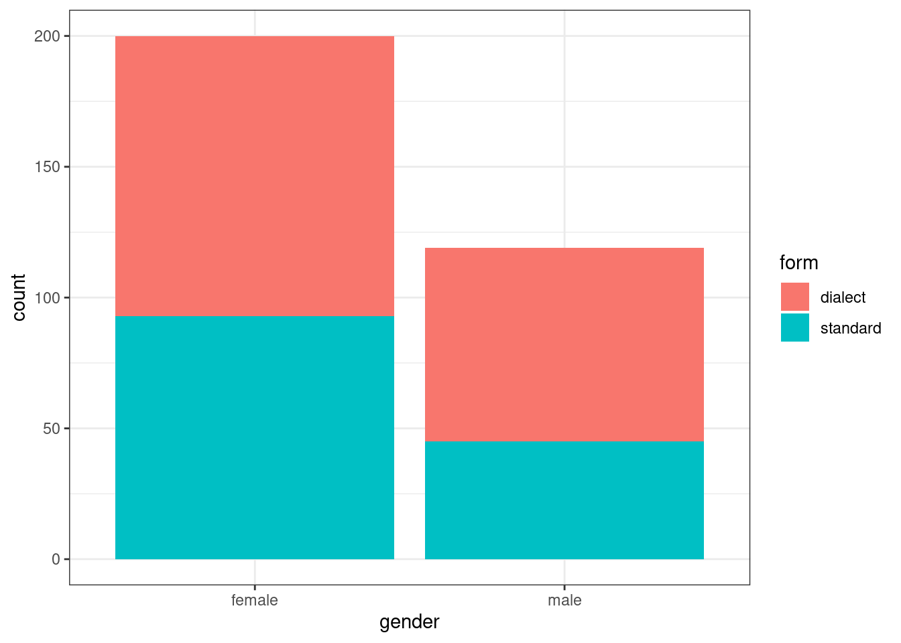
table(dialect_forms) gender
form female male
dialect 107 74
standard 93 45prop.table(table(dialect_forms)) gender
form female male
dialect 0.3354232 0.2319749
standard 0.2915361 0.1410658chisq.test(table(dialect_forms))
Pearson's Chi-squared test with Yates' continuity correction
data: table(dialect_forms)
X-squared = 1.9525, df = 1, p-value = 0.1623Критерий χ² считают относительно наблюдаемых \(f_o\) и ожидаемых \(f_e\) значений:
\[\chi^2 = \sum\frac{\left(f_0-f_e\right)^2}{f_e}\]
Считается, что критерий χ² не стоит применять, если хотя бы одно из ожидаемых значений меньше 5. Давайте посмотрим на ожидаемые наблюдения:
chisq.test(table(dialect_forms))$expected gender
form female male
dialect 113.47962 67.52038
standard 86.52038 51.47962chisq.test(table(dialect_forms))$observed gender
form female male
dialect 107 74
standard 93 45Если одно из ожидаемых значений меньше 5, то следует использовать тест Фишера:
fisher.test(table(dialect_forms))
Fisher's Exact Test for Count Data
data: table(dialect_forms)
p-value = 0.1608
alternative hypothesis: true odds ratio is not equal to 1
95 percent confidence interval:
0.4279225 1.1396897
sample estimates:
odds ratio
0.7004421 Вообще таблицы сопряженности бывают разные, да и тестов куда больше см. (Lydersen, Fagerland, and Laake 2009)
14.5.5 Критерий Мак Немара
Во время диалектологической экспедиции от 20 информантов (10 мужчин, 10 женщин) были записаны списки слов. Получилось, что 13 информантов использовали в речи велярный фрикативный ɣ, а 22 — велярный стоп ɡ. Через 5 лет работали с теми же информантами и соотношение немного поменялось: 7 ɣ против 28 ɡ. Является ли получившаяся разница статистически значимой?
repeated_dialect_forms <- read_csv("https://raw.githubusercontent.com/agricolamz/DS_for_DH/master/data/dialect_forms_repeated_fake.csv")
table(repeated_dialect_forms) time
feature after before
fricative 7 13
stop 28 22prop.table(table(repeated_dialect_forms)) time
feature after before
fricative 0.1000000 0.1857143
stop 0.4000000 0.3142857repeated_dialect_forms %>%
ggplot(aes(time, fill = feature))+
geom_bar()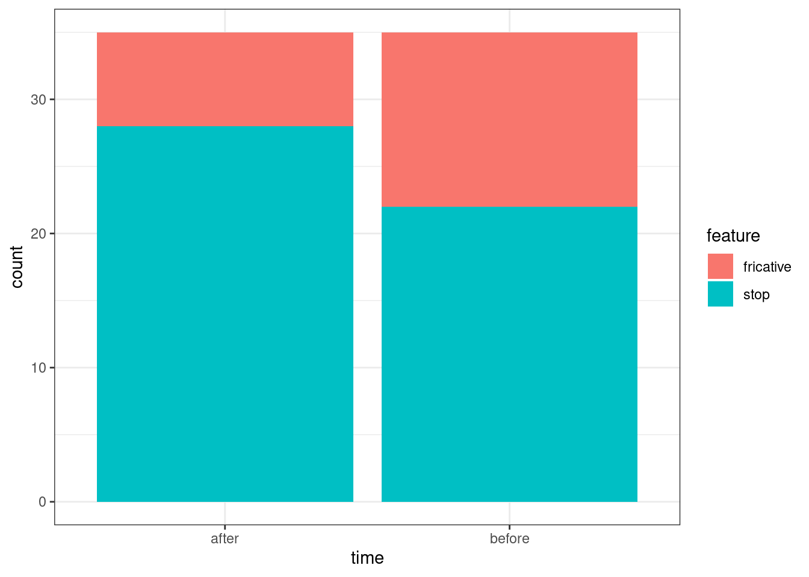
mcnemar.test(table(repeated_dialect_forms))
McNemar's Chi-squared test with continuity correction
data: table(repeated_dialect_forms)
McNemar's chi-squared = 4.7805, df = 1, p-value = 0.0287814.6 Послесловие
P-value очень много ругают
- за то, что его очень часто понимают неправильно (Gigerenzer 2004), (Goodman 2008)
- за то, что само по себе p-value < 0.05 слабый довод (Sterne and Smith 2001), (Nuzzo and others 2014), (Wasserstein and Lazar 2016)
Q: Why do so many colleges and grad schools teach p = 0.05?
A: Because that’s still what the scientific community and journal editors use.
Q: Why do so many people still use p = 0.05?
A: Because that’s what they were taught in college or grad school
В связи с этим, сейчас можно наблюдать
- большое обсуждение p-value vs. доверительные интервалы
- все нарастающую популярность Байесовской статистики
14.7 Рассказы Чехова и Зощенко
14.7.1
Рассказы Чехова и Зощенко собраны в tidy формате. Постройте график. Узнайте долю, которую составляют слова c леммой деньги от всех слов рассказа и проведите статистический тесты, сравнивающие [доли слов с леммой деньги] с знечением 0.000512 из частотного словаря русского языка [Шаров, Ляшевская 2011].
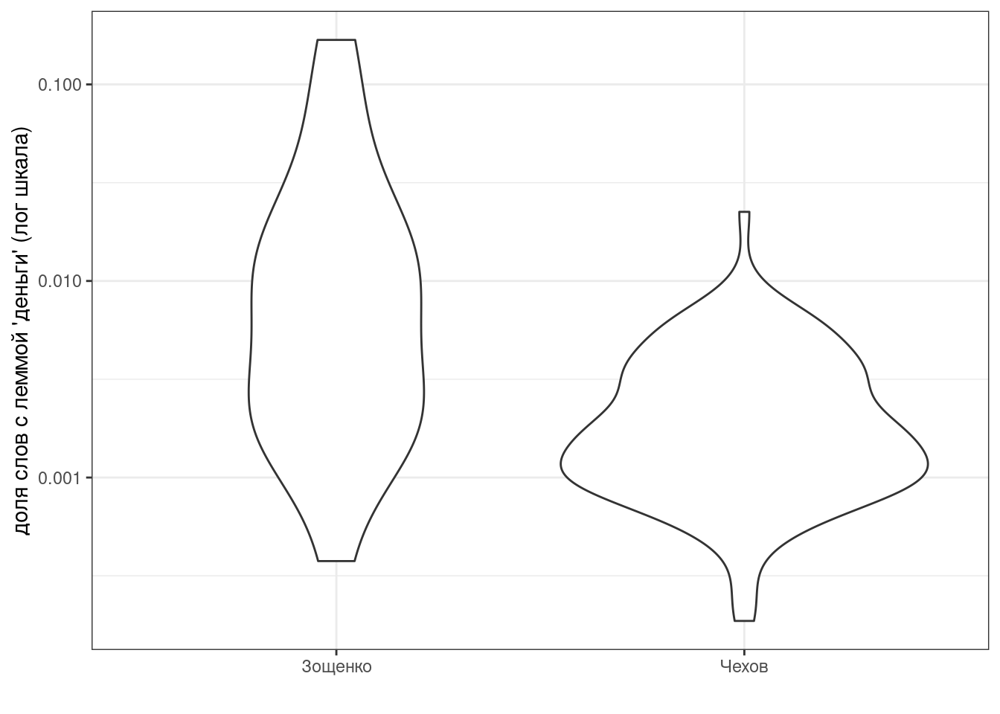
- Приведите значение p-value для Чехова, округленное до 3 знаков после запятой:
- Приведите значение t-статистики для Чехова, округленное до 3 знаков после запятой:
- Приведите значение p-value для Зощенко, округленное до 3 знаков после запятой:
- Приведите значение t-статистики для Зощенко, округленное до 3 знаков после запятой:
14.7.2
Рассказы Чехова и Зощенко собраны в tidy формате. Постройте график. Проведите статистический тест, проверяющий, действительно ли Зощенко писал более короткие рассказы чем Чехов.

- Приведите значение p-value, округленное до 3 знаков после запятой
- Приведите абсолютное (т. е. неотрицательное) значение t-статистики, округленное до 3 знаков после запятой:
14.7.3
Посчитайте энтропию каждого рассказа, визуализируйте разницу между авторами и проведите статистический тест, который показывает, что энтропия в рассказах Зощенко выше.
`summarise()` has grouped output by 'author', 'titles'. You can override using the `.groups` argument.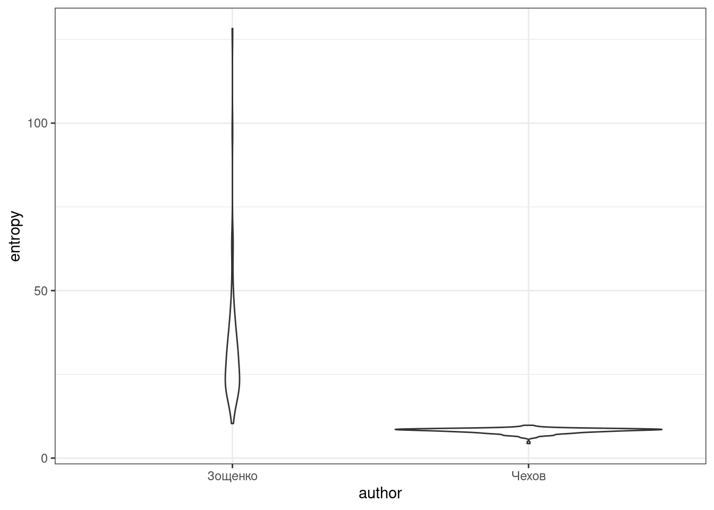
- Приведите название рассказа с минимальной энтропией
- Приведите название рассказа с максимальной энтропией
- Приведите значение p-value, округленное до 3 знаков после запятой
- Приведите значение t-статистики, округленное до 3 знаков после запятой:
14.7.4
Визуализируйте количество слов и энтропию каждого автора. Какие выводы можно сделать на основании полученого графика?
`summarise()` has grouped output by 'author', 'titles'. You can override using the `.groups` argument.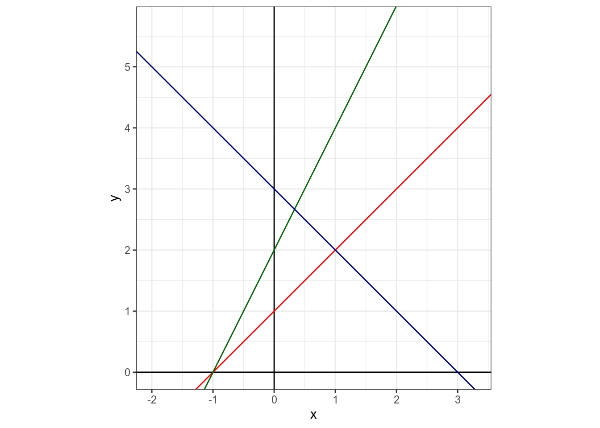
14.8 Obamacare
В 2010 Б. Обама подписал закон о доступном здравоохранении. В датасет записаны данные о доле незастрахованных людей (в процентах) в каждом штате в 2010 и в 2015 годах (исходные данные на kaggle). Нарисуйте график (я использовал geom_linerange(aes(ymin = …, ymax = …))) и проведите статистический тест, показывающий что произошло изменение.
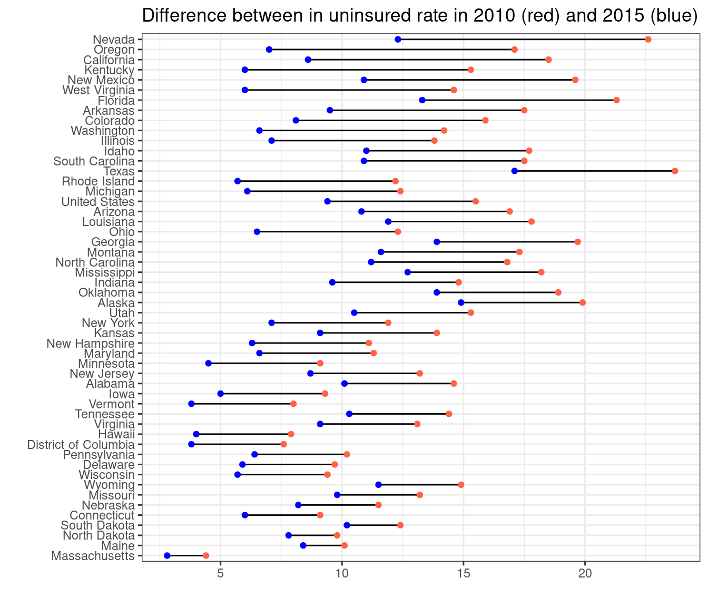
- Приведите среднее значение разниц между годами
- Приведите значение p-value, округленное до 3 знаков после запятой
- Приведите значение t-статистики, округленное до 3 знаков после запятой: